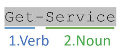

Interfaces
Alle moderne besturingssystemen bieden twee methodes om met het besturingssysteem zelf te werken:
- GUI: Graphical User Interface
- CLI: Command Line Interface
In dit hoofdstuk richten we ons op de tweede van deze twee belangrijkste interactiemethodes.
Command Line Interface
Hoewel de GUI een van de meest gebruikte interactiemethodes voor Windows is, geeft de CLI (eens je ze onder de knie hebt) je diepgaandere controle over het besturingssysteem zelf. Met de CLI kan je onder meer uitvoeren:
- Bestandsbeheer
- Systeemconfiguratie
- Gebruikersbeheer
- Diagnostiek
- Applicatiebeheer
- Beveiligingsbeheer
- ...
Als systeem- en netwerkengineer is het noodzakelijk dat je de CLI kan gebruiken, zeker voor Windows en alle cloudgerelateerde services.
De eerste versie van de Microsoft-besturingssystemen, MS-DOS (en alle andere besturingssystemen in het begin van het computertijdperk), was uitsluitend tekstgebaseerd, waardoor de CLI de enige beschikbare interactiemethode was. Vanaf Windows 1.0 ontwikkelde Microsoft de eerste GUI, die je kon uitvoeren nadat je de specifieke GUI-applicatie had gestart. Tot Windows XP steunden de Windows-versies sterk op de kernfuncties van MS-DOS en draaiden ze dus bovenop de CLI van MS-DOS.
Vanaf Windows XP ontwikkelde Microsoft het besturingssysteem van de grond af opnieuw en werd de GUI de belangrijkste interactiemethode van het besturingssysteem. De GUI draaide niet langer bovenop de CLI, maar was een integraal onderdeel van het besturingssysteem. Omdat de meeste power users echter gewend waren aan de CLI, hield Microsoft de CLI in leven via de applicatie Windows Command Prompt. Zelfs in de moderne versie Windows 11 is Command Prompt nog altijd beschikbaar.
In het begin van de jaren 2000 raakte Command Prompt echter achterop en werd de nood aan een krachtigere en flexibelere CLI steeds groter. Om aan die behoefte te voldoen, ontwikkelde Microsoft PowerShell. Dit is een objectgeoriënteerde shell met geavanceerdere functionaliteit en de mainstream-shell voor alle services van Microsoft.
In de rest van deze cursus gebruiken we enkel PowerShell voor CLI-interactie met Windows.
PowerShell starten
Je kan PowerShell op drie manieren starten:
- Via de PowerShell-terminalapp
- Via de Terminal-app
- Via Visual Studio Code
De meeste gebruikers geven de voorkeur aan de Terminal-app omdat je er meerdere tabbladen kan gebruiken. Zo kan je meerdere cmdlets naast elkaar uitvoeren zonder te wachten tot de vorige cmdlet een resultaat geeft.
Standaardgebruiker vs administrator
Standaard opent de PowerShell-shell (of je nu de shell opende via de PowerShell-terminalapp of via de Terminal-app) met een standaardgebruikersprofiel. Deze shell draait onder je huidige gebruiker en laat dus alle acties toe volgens je rechten binnen het besturingssysteem. Zodra je echter cmdlets moet uitvoeren waarvoor administratorrechten nodig zijn, moet je PowerShell starten onder het administratorprofiel. Zelfs als je gebruiker lid is van de groep Administrators, moet je PowerShell nog altijd onder het administratorprofiel openen voor administratieve acties.
Cmdlets
Wanneer je in PowerShell een actie uitvoert, gebeurt dat altijd via een cmdlet. Een cmdlet is het commando of de actie die je in PowerShell uitvoert. Alle cmdlets zijn op dezelfde manier opgebouwd: Verb-Noun

Het verb (werkwoord) is altijd de actie die we willen uitvoeren en het noun (zelfstandig naamwoord) geeft aan op welk onderdeel we de actie willen uitvoeren.
De volgende tabel geeft een overzicht van enkele veelgebruikte verbs in PowerShell.
| Verb | Doel | Voorbeeldcmdlet |
|---|---|---|
| Get | Informatie opvragen | Get-Process |
| Start | Een bewerking of proces starten | Start-Service |
| Stop | Een proces of service beëindigen of stoppen | Stop-Process |
| Read | Gebruikersinvoer opvragen of lezen | Read-Host |
| Write | Tekst of gegevens uitvoeren | Write-Output |
| New | Nieuwe items of objecten aanmaken | New-Item |
Approved Verbs for PowerShell Commands - Microsoft Learn
Zoeken en help
Wanneer je PowerShell voor het eerst gebruikt, kan het ontmoedigend zijn. Met meer dan 800 standaardcmdlets in PowerShell is het een titanenwerk om ze allemaal van buiten te kennen. Zelfs ervaren PowerShell-gebruikers kennen niet alle commando's van buiten. Gelukkig heeft Microsoft twee speciaal ontworpen cmdlets om je te helpen de juiste cmdlet voor je taak te vinden.
Get-Command
De eerste cmdlet is Get-Command. Met deze cmdlet kan je zoeken in de databank van alle ingeschakelde cmdlets.
Bijvoorbeeld:
Get-Command *process*geeft een lijst van alle PowerShell-cmdlets waarin het woord process voorkomt.Get-Command *usergeeft een lijst van alle PowerShell-cmdlets die eindigen op user.Get-Command get-File*geeft een lijst van alle PowerShell-cmdlets die beginnen met get-file.
De oplettende studenten hebben gemerkt dat de plaatsing van de * belangrijk is, want het resultaat verandert naargelang de plaats van de *:
search*: alle cmdlets die beginnen met de zoekterm.*search: alle cmdlets die eindigen op de zoekterm.*search*: alle cmdlets waarin de zoekterm voorkomt.
Get-Help
Nu we het commando hebben gevonden dat we zochten, moeten we nog onthouden wat het commando doet en hoe we het moeten gebruiken. Daarvoor kunnen we de cmdlet Get-Help gebruiken. Deze cmdlet geeft een gedetailleerde uitleg over wat de cmdlet doet en hoe we hem moeten gebruiken. Als we de juiste extra parameters meegeven, krijgen we zelfs nog meer details.
Get-Help Get-Serviceopent een samengevatte helppagina van de cmdlet Get-ServiceGet-Help Get-Service -Fullopent de volledige helppagina van de cmdlet Get-ServiceGet-Help Get-Service -Onlineopent de volledige online helppagina van de cmdlet Get-ServiceGet-Help Get-Service -Examplesopent een helppagina met enkele veelvoorkomende voorbeeldenGet-Help Get-Service -Parameter *opent een helppagina met een overzicht van alle beschikbare parameters voor de cmdlet Get-Service (meer details over parameters volgen later in deze cursus)
Alias
Door de Verb-Noun-syntax kunnen PowerShell-cmdlets lang worden. Bijvoorbeeld: Enable-MicrosoftUpdateServiceManagerClient. Dergelijke cmdlets onthouden en intypen in de terminal kan heel omslachtig zijn. Daarom introduceerde Microsoft het concept van aliassen. Dit zijn afkortingen van de cmdlet of kortere cmdlets. De aliassen zijn korter en dus makkelijker te onthouden. Om de juiste alias van een bepaalde cmdlet te vinden, gebruik je de cmdlet Get-Alias.
Bijvoorbeeld:
Get-Alias *cd*: geeft een overzicht van alle bekende aliassen waarin 'cd' voorkomtGet-Alias -Definition Stop-Process: geeft een overzicht van alle bekende aliassen voor de cmdletStop-Process.
De oplettende student heeft gemerkt dat we hetzelfde zoekprincipe met de * gebruiken als bij de cmdlet Get-Command.
Parameters
Elke cmdlet bestaat uit de cmdlet zelf en extra opties die beschikbaar zijn voor die specifieke cmdlet. Deze opties noemen we parameters. Alle parameters roep je aan met het teken -, gevolgd door de eigenlijke parameter en, indien nodig, een waarde voor de parameter.
Bijvoorbeeld:
Get-Process –Name *chrome*
In dit voorbeeld vragen we PowerShell om een overzicht van alle huidige processen waarvan de naam chrome bevat.
Elke cmdlet heeft meerdere parameters die je in dezelfde cmdlet naast elkaar kan gebruiken.
Bijvoorbeeld:
Get-ChildItem -File -Recurse -Name *test*
Zoals eerder vermeld is het een titanenwerk om alle cmdlets van buiten te leren, laat staan alle parameters van elke cmdlet. Get-Help cmdlet -Parameter * geeft je een overzicht van alle parameters en hoe je ze correct gebruikt.
Parameters en volgorde
Wanneer we leren werken met parameters, is het best om altijd de volledige parameternamen te schrijven. Zo blijven je commando's leesbaar en voorkom je fouten.
Cmdlets ondersteunen echter ook positioneel en standaardgedrag.
Deze twee commando's zijn bijvoorbeeld gelijkwaardig:
Get-Service -Name Spooler
Get-Service Spooler
Een ander voorbeeld:
Get-ChildItem -Path C:\Windows
Get-ChildItem C:\Windows
In beide voorbeelden zie je dat het niet nodig is om altijd de volledige parameternaam te schrijven. We moeten echter voorzichtig zijn, want niet alle parameternamen mogen weggelaten worden: elke parameter heeft metadata die bepaalt hoe deze parameter gebruikt kan worden. Deze gegevens staan in de helppagina's:
Get-Help Get-ChildItem -Parameter Path
Get-Help Get-ChildItem -Parameter *
De uitvoer bevat metadata zoals:
Required? false|true
Position? named|number
Default value true|false
Accept pipeline input? true|false
Accept wildcard characters? true|false
Betekenis van deze velden:
Required?: moet deze parameter opgegeven worden?Position?: kan hij op volgorde doorgegeven worden (0,1, ...) of moet hij bij naam genoemd worden?Default value: is er een terugvalwaarde wanneer de parameter weggelaten wordt?Accept pipeline input?: kunnen waarden uit de pipeline komen?Accept wildcard characters?: ondersteunt hij patronen zoals*en?
Voorlopig zijn we enkel geïnteresseerd in de eerste drie metadata.
Required?
Elke parameter die required is, heeft een waarde nodig wanneer je de cmdlet uitvoert. Geef je de parameter of de waarde niet op, dan vraagt PowerShell ernaar tijdens het uitvoeren van de cmdlet.
PS C:\pws> copy-item
cmdlet Copy-Item at command pipeline position 1
Supply values for the following parameters:
Path[0]:
PS C:\pws>
Position?
Position vertelt PowerShell waar een parameterwaarde in het commando mag staan.
namedbetekent dat je de parameternaam moet schrijven (bijvoorbeeld-Path).- een getal (
0,1, ...) betekent dat je de parameternaam mag weglaten en waarden op volgorde mag doorgeven.
Je kan dit voor Copy-Item nagaan met:
Get-Help Copy-Item -Parameter Path
Get-Help Copy-Item -Parameter Destination
Bij Copy-Item is Path positioneel 0 en Destination positioneel 1.
PS C:\pws> get-help copy-item -Parameter Path
-Path <System.String[]>
Specifies, as a string array, the path to the items to copy. Wildcard characters are permitted.
Required? true
Position? 0
Default value None
Accept pipeline input? True (ByPropertyName, ByValue)
Accept wildcard characters? true
PS C:\pws> get-help copy-item -Parameter Destination
-Destination <System.String>
Specifies the path to the new location. The default is the current directory.
To rename the item being copied, specify a new name in the value of the Destination parameter.
Required? false
Position? 1
Default value Current directory
Accept pipeline input? True (ByPropertyName)
Accept wildcard characters? false
PS C:\pws>
Deze twee commando's zijn gelijkwaardig:
Copy-Item -Path .\notes.txt -Destination .\backup\notes.txt
Copy-Item .\notes.txt .\backup\notes.txt
Omdat PowerShell op positie koppelt:
- eerste waarde ->
Path(positie 0) - tweede waarde ->
Destination(positie 1)
Als je de volgorde omkeert, verwijst je kopieerbewerking naar de verkeerde bron/bestemming.
Default
Als je sommige parameters weglaat, kan PowerShell standaardwaarden gebruiken. Voorbeeld:
Get-ChildItem
Zonder -Path gebruikt het de huidige locatie.
PS C:\pws> get-help Get-ChildItem -Parameter path
-Path <System.String[]>
Specifies a path to one or more locations. Wildcards are accepted. The default location is the current directory (`
.`).
Required? false
Position? 0
Default value Current directory
Accept pipeline input? True (ByPropertyName, ByValue)
Accept wildcard characters? true
PS C:\pws>
Switch
Switch-parameters zijn parameters zonder waarde, bijvoorbeeld:
Get-ChildItem -Recurse -Force
Zowel -Recurse als -Force zijn ofwel aanwezig ($true) ofwel niet aanwezig ($false).